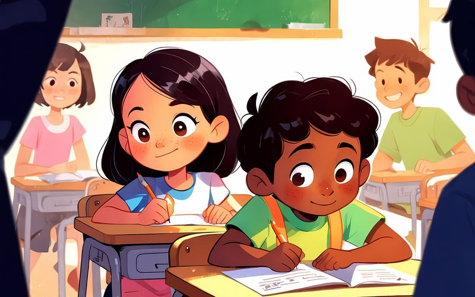
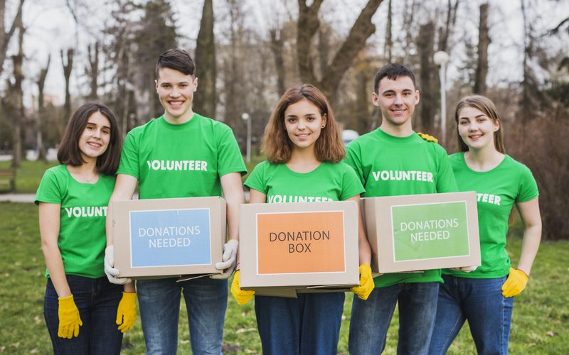
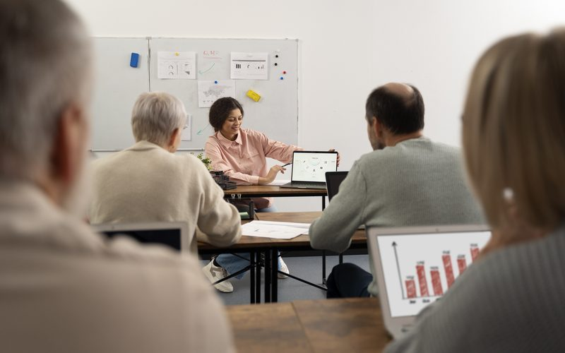

Reforço Escolar Em andamento

Aulas de português e matemática para crianças de 7 a 12 anos, três vezes por semana.
- Meta: atender 80 crianças em 2026
- Local: sede da ONG, Centro
A ONG trabalha em três frentes: educação, segurança alimentar e inclusão digital. Cada projeto abaixo pertence a uma delas e aceita voluntários e doações.

Aulas de português e matemática para crianças de 7 a 12 anos, três vezes por semana.

Distribuição mensal de cestas básicas para famílias cadastradas.

Oficinas de informática básica e uso seguro da internet para jovens e adultos.
Qualquer pessoa maior de 16 anos pode participar. O processo é simples:
Estoque baixo A Cesta Solidária está com apenas 40 cestas para a entrega deste mês. Doações de arroz, feijão e óleo são prioridade.
Você pode contribuir de três formas. Veja para onde vai cada tipo de doação:
| Tipo | Como fazer | Destino |
|---|---|---|
| Pix mensal | Chave: contato@maossolidarias.org.br | Cesta Solidária |
| Alimentos | Entrega na sede, de segunda a sexta | Cesta Solidária |
| Equipamentos | Computadores e notebooks usados | Inclusão Digital |
Não. Oferecemos orientação no primeiro dia e você começa acompanhando um voluntário experiente.
Sim. Enviamos o recibo por e-mail em até cinco dias úteis.
Pode. Basta marcar mais de uma área de interesse no cadastro.